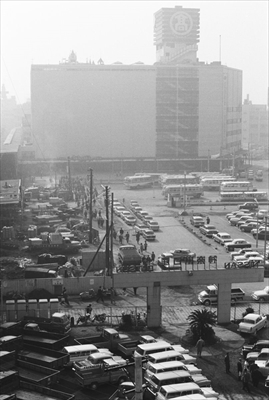

インタビュー
質問１ 昔の横浜駅と今の横浜駅の違いや大きな変化があれば教えてください。全く変わっていないところもあれば教えてください。
質問２ 横浜に建てられてうれしかった施設と、なくなってしまってショックだった施設があれば教えてください。

質問３ 横浜の学生時代の思い出の地を教えてください。また、なぜその場所に思い入れがあるのか、現在はその場所は存在しているのかも教えてください。
質問４ 横浜に開通したことで便利になった路線とその理由を教えてください。
質問５ 「昔の横浜はこういうところが良かったよな～」と思う部分があれば教えてください。それを踏まえて、
「未来の横浜はもっとこうなってほしい」と思う部分もあれば教えてください。